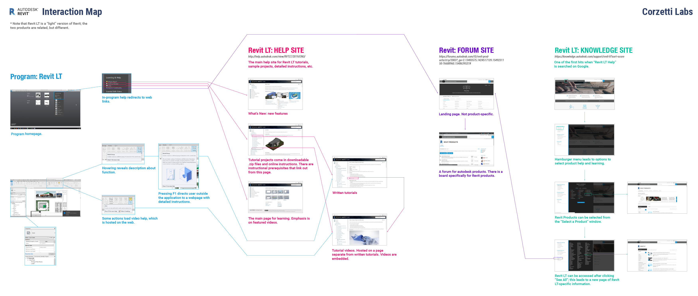
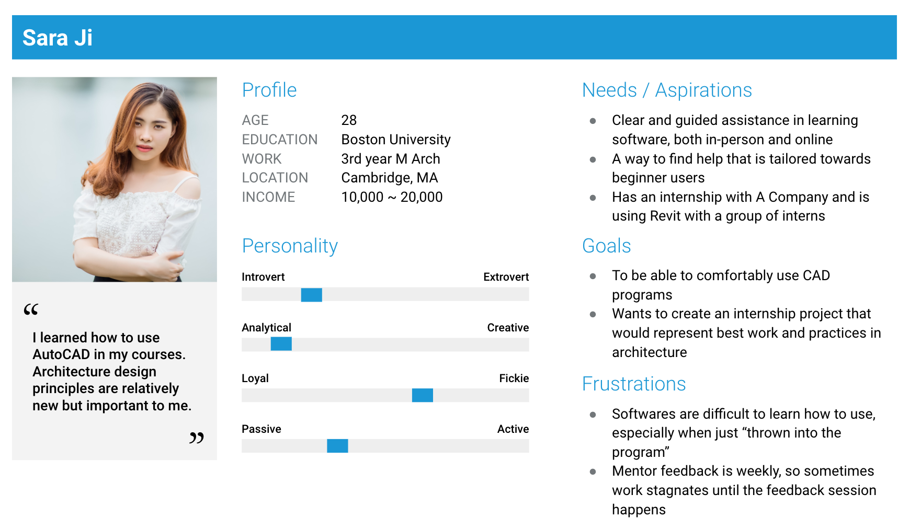
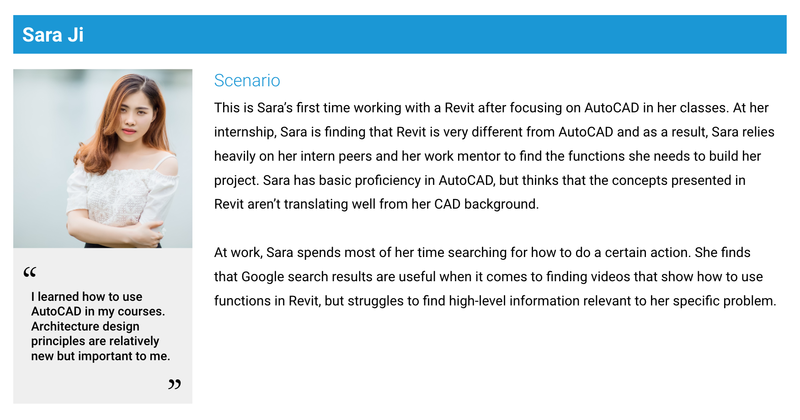
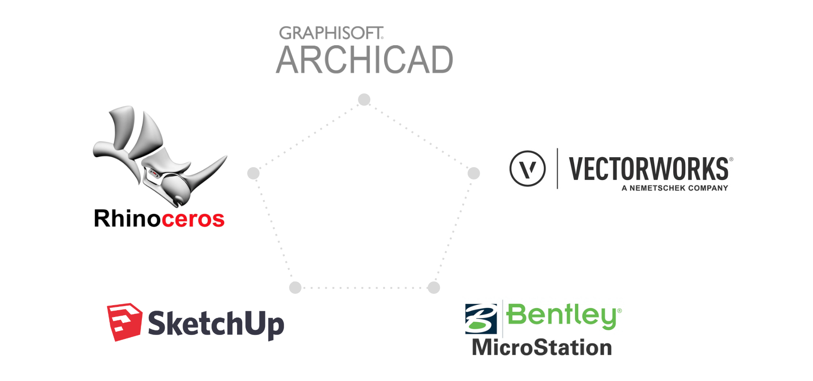
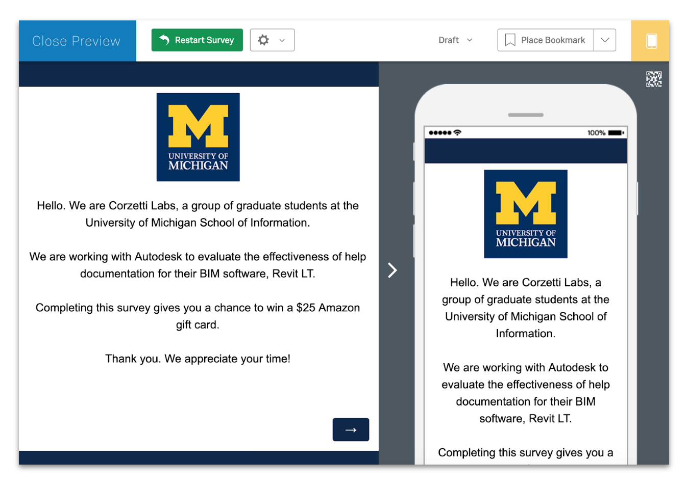
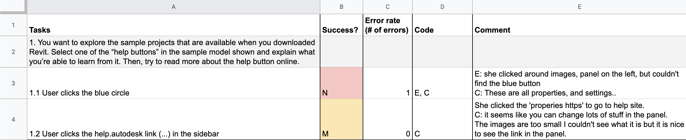

User Research & Usability Testing: Revit LT
Role: User Experience Researcher
Client: Autodesk
This project sought to evalute the state of learning and onboarding materials for Revit LT, a Building Information Modeling (BIM software) created by Autodesk. My team
(Corzetti Labs) worked to provide feedback on how to best improve the learning experience for new software users. In
order to do so, we stepped through various elements of the usability testing process, including:
This was a semester-long project for a course on Usability Testing & Needs Assesment. It was completed in coordination with Stephanie Choi, Jackson Hammond, and Youngmin Kim.
Stakeholder Interviews
We began by conducting video interviews with several members of Autodesk's team -- including our two primary contacts, a Senior Learning Content Developer and an Experience Design Architect -- who were concerned with our target product. These preliminary interviews enabled us to properly gauge our scope in terms of what elements of Revit LT's learning and onboarding system we were to focus on: tutorials, essential skills videos, and sample models.
Our contacts emphasized their particular interest in the effectiveness of the program's videos and tutorials, but were also open to other critiques that may be valuable for the system.
Interaction Map
We first began with a high-level overview of the Revit LT software and its related documentation, then generated a static representation of the relevant structures in the form of an interaction map.

Please click here to open ths map in a new tab.
{kind=link}
User Interviews
The next phase saw our team conducting semi-structured interviews with a selected group of participants who possessed varying levels of experience in computer-aided design in the field of architecture. In total, we conducted five interviews with each lasting around 30-60 minutes.
We determined the main user group on which to focus included both professional and student architects at beginner and intermediate levels. From our interivews and research, we created diffrent three personas to represent our potential user types.
Below is an example of one persona: Sara Ji, a third-year master's student in architecture. Other personas included an undergraduate architecture student and a professional architect.
 
Comparative Analysis
We then researched and evaluated five competitor products in order to compare the online learning materials and processes that each software offered. This culminated in a matrix that highlighted various strenths and weaknesses of the different programs (with a focus on their videos and tutorials) as well as as series of preliminary findings and recommendations.

Heuristic Evaluation
Next, we utilized heuristic evaluation methods, based on Jakob Nielsen’s 10 principles of interaction design, to assess the information structure of the Revit documentation site.
After we individually recorded the results of the evaluation as written reports, we made a spreadsheet which includes heuristic numbers and findings in each criteria with comments and severity ratings on a numerical scale of 1-5. Once each comment was rated, we aggregated the findings that had the highest rates.
Surveys
For our surveys, we sought data from both professional and student architects regarding demographic details about users, their opinions on Revit’s help documentation and onboarding materials, and also more general preferences regarding methods of online learning.
Our survey was live for 10 days and received 63 responses.
Preference Testing
Next, preference tests were conducted out in order assess user reactions to changes made with these evaluations in mind. Selected users were asked for their preferences and opinions about current implementations and their mocked-up prototype counterparts.
The original Autodesk Knowledge page (A)
Our modified version for comparison (B)

Usability Testing
Finally, we conducted five usability tests for the current software and documentation site. Our goal was to evaluate if users could successfully and efficiently navigate to the documentation they need from inside the software, as well as around the website it lives on. We gave each user four tasks to complete.
Throughout the duration of the testing, our members observed, moderated, and data logged for the participants (example below). Each individual test lasted from 30 minutes to an hour.

Findings & Recommendations
The following are brief summaries of our findings and recommendations for Revit LT & Autodesk, synthesized from our research conducted over the course of the semester.
Findings
- Regardless of users’ experience with Revit or RLT, the search functionality was utilized more than organic browsing through the sidebar navigation.
- Users preferred a walkthrough-style approach to tutorial materials.
- Users often overlooked the provided help documentation within RLT.
- Usability tests showed users of varying experience had mixed opinions about the suggested workflows and documentation examples.
Recommendations
- Redesign the help site to place a focus on searching as the first action, rather than clicking through thumbnails or navigation links.
- Make it more apparent within the software how users can learn more about using RLT.
- Examples used to explain the how or why of the workflows should always be relevant and focused on the work that users will be conducting
If you would like to read any of the complete reports for each section, please feel free to contact me at vijiang@umich.edu.